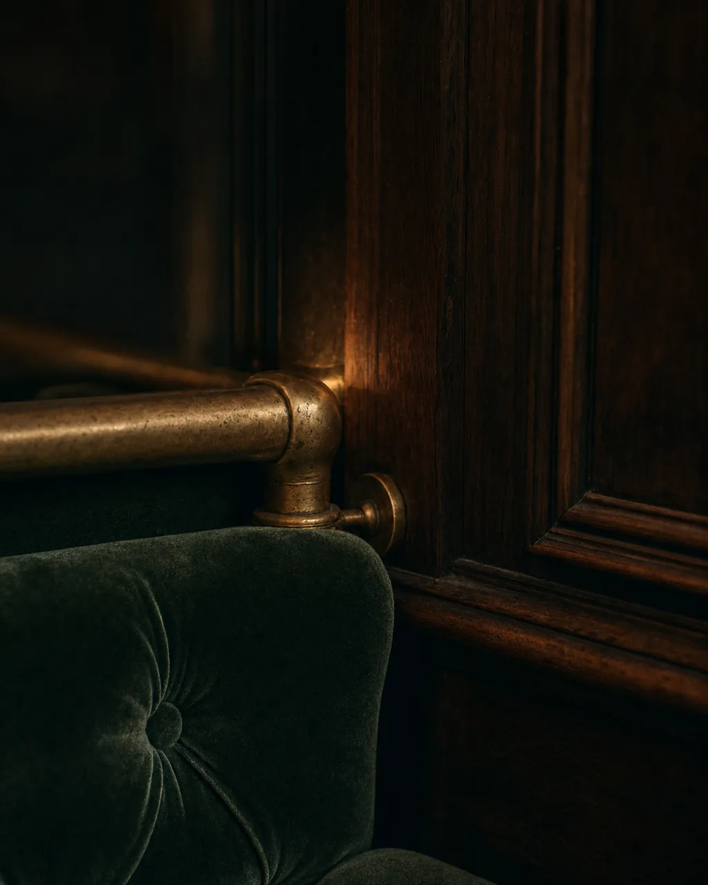
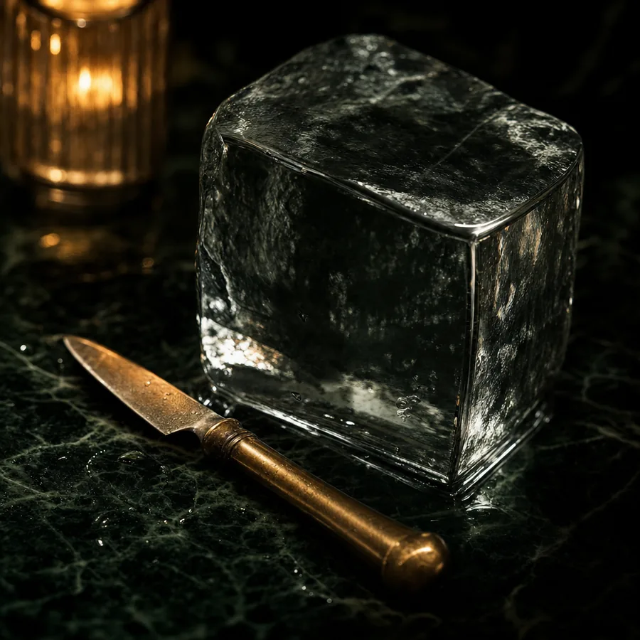

TheBeverly
Social club, bar and restaurant
A members' club above a bar and restaurant, at The Middle Quarter in Woodbury, Connecticut.
Not yet open. Membership begins with the waiting list.
Join the waiting listUpstairs, downstairs
The Beverly is intimate by design.
Upstairs is the club. It is for members only.
Downstairs is the bar and the restaurant. Low light, a proper drink, and a table that is yours for the evening.
Interiors by Christian Arkay-Leliever, the designer behind Geronimo and The Place 2 Be.

Stevie Sacco & Mari O'Rourke

The Beverly grew out of a love of craft cocktails, and a belief that every detail of an evening matters.
We wanted a place where the whole evening is held to that standard. So we are building it.
Membership
Membership begins with the waiting list.
The Beverly is in design and awaits the approval of the Town of Woodbury. There is no opening date. We expect it to take the better part of two years.